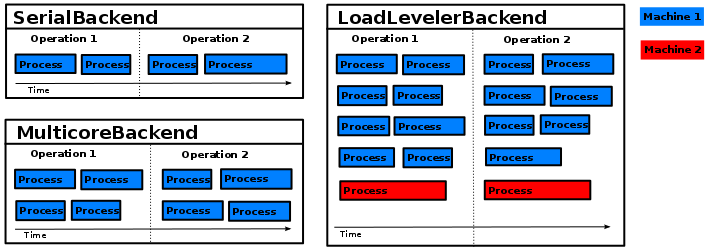

Overview¶
pySPACE is an interface, which automatizes data handling, data processing and parallelization. So the user defines Resources, how to process the data in which Modality. It is also specified, where the relevant resources are with another configuration file.
The task of pySPACE is to define the different components and how to access them, loading of the configuration files, and Resources, and finally executing the defined process with the desired Modality. So the process transforms the data, depending on the choice of the user.
Resources¶
Data in pySPACE has several levels of granularity, which makes it difficult to find proper names for each level.
The ordering is:
storage: the folder with all the data, defined as described in The Configuration File summary: a summary of all the datasets with same type and fitting all to one topic dataset: One data recording base data: One component/sample of the dataset ...: Base data could be divided in components belonging to one special sensor and/or timestamp
Datasets¶
Datasets are structured in dataset_defs.
Datasets should comprise data that originates from the same source and type
(data_types),
i.e. the process that generated them should be the same.
Several dataset_defs, that originate from different sources,
can be combined together into a summary.
A typical example of a dataset_defs is an EEG
measured from one subject in one session.
In contrast, a summary can contain the measurements of several different subjects or from different sessions.
Both dataset_defs and summaries consist
of the actual data and some meta data stored in the file: metadata.yaml.
dataset_defs have a type, e.g.,
time_series or
feature_vector.
The metadata is crucial, because it tells the software,
which type of data is stored in which format.
The format is also important to know, since different formats require
totally different loading algorithms, e.g., comma separated values without heading
and empty space separated values with heading.
For the relevant types, there is a direct mapping between
dataset_defs types and
the data_types, they contain.
Example of a FeatureVectorDataset metadata.yaml¶
type: feature_vector
author: Max Mustermann
date: '2009_4_5'
node_chain_file_name: example_flow.yaml
input_collection_name: input_collection_example
classes_names: [Standard, Target]
feature_names: [feature1, feature2, feature3]
num_features: 3
parameter_setting: {__LOWER_CUTOFF__: 0.1, __UPPER_CUTOFF__: 4.0}
runs: 10
splits: 5
storage_format: [arff, real]
data_pattern: data_run/features_sp_tt.arff
Summaries¶
A summary inherits the type of the datasets it comprises,
i.e. it must be homogeneous containing only one type of dataset.
The structure is quite easy,
because it is normally only one folder,
containing folders with the different dataset_defs.
So there is no special type or implementation therefore,
but only the folder name in the configuration files and in the program.
So input_path and result_dir always refer to a summary in the code.
Processing¶
Processing describes any kind of computation that transforms one kind of data
into another. In pySPACE, there exist different concepts of processing for
different levels of granularity mostly dependent on the Resources.
Predefined processing, which only concatenates other processing is implemented
in the chains module.
The other components, where the programmer might integrate new processing
algorithms are defined in the missions module with an
automatic integration into the interface and documentation.
The main categories are:
operation chain: Concatenation of operations, with summaries as input, output and intermediate results operation: Transformation of a summary with several parameter settings into a new summary process: Single transformation part of a summary, normally only operating with one parameter setting on one dataset, producing a new dataset node chain: Concatenation of nodes to transform a dataset to a new one node: Transforms one component/sample of the dataset, normally ...: External code and other elementary functions can be wrapped or used in nodes.
Operation Chain¶
On the highest level, an
operation_chain
is a sequence of
operations.
The input of the operation_chain
is processed by the first
operation of the operation chain.
The output of an operation acts
as the input for the subsequent operation of the
operation_chain.
The output summary of the last
operation is the result of the
operation_chain.
{kind=link}
Operations and Operation Processes¶
On the next, main level, an operation
takes a summary as input
and produces a second summary as output.
Each operation
consists internally of a set of processes.
While the operations of an operation chain are dependent and thus processed
sequentially, the processes of an operation are independent
and can thus be processed in parallel.
The way an operation is divided into processes is not fixed,
for instance an operation might have one process per dataset of the input
summary or one process per run applied to the input summary.

Types
Both processes and operations have a type.
Currently, most processes are internally implemented
by using algorithms implemented as nodes or in Weka.
Correspondingly, there is one
NodeChainOperation/process.
There are currently two processes based on Weka.
One type is the WekaFilter-Process/Operation,
which is defined by its property to transform a summary of
datasets of type “feature vector” into another one of the same type.
It might internally apply some feature selection, normalization etc.
The second Weka based type is the WekaClassification-Process/Operation.
This type is defined by its property of transforming
one summary of datasets of type “feature_vector” into a
PerformanceResultSummary.
Usually, it applies internally a set of classifiers to the datasets
and stores several statistics concerning their performance
(accuracy, precision, recall etc.)
as well as some properties of the input data into a result file.
Furthermore, there is also one AnalysisProcess/Operation
that analysis the data contained in a
PerformanceResultSummary
and creates a set of plots that visualizes and
evaluates the effect of various parameters on several metrics.
All processes of an operation
must have the same type.
In contrast, the operations of an operation chain have typically different
types.
The restriction is that each operation of an operation chain must be able
to process the summary produced by the preceding operation.
Node Chains and Nodes¶
On the lower level is the very powerful
node_chain,
which is a concatenation of nodes.
On this level
datasets
are transformed.
The nodes, elementary processing algorithms,
are on the the lowest level, because they work on single
components or
operation process.
Depending on the algorithms, there is maybe further granularity.
Furthermore, when nodes
execute a node_chain or many of
them, the levels get difficult to order.
Specification of the Processing with YAML¶
Operations
and operation chains can directly be started from the command line
and be configured by means of a YAML configuration file.
In contrast, processes can not be started explicitly
but only as part of an operation or an operation chain.
Correspondingly, processes are not configured individually
but are created based on the specification of the
operations.
This specification file contains the type of the operation
(e.g. weka_classification), the input summary, and some information
that depend on the type of the operation.
For instance, a node_chain operation specifies which node_chain or
node chain template should be used,
which parameter values for the nodes of this chain should be tested,
and how many independent runs should be conducted (see example below).
The specification file of an operation chain consists of the input data
and the list of configuration files of the operations
that should be executed as part of the operation chain.
The specification files of operations and its chains are located
in the specs directory (see The Specs Directory).
Examples for these files can be found in: Specification Files.
Modality¶
Execution is mainly handled by Backend, which may be accessed by the SubflowHandler, but sometimes other ways may be chosen.
Backends¶
The execution of an operation chain/operation
depends on the used backend.
The backend determines
on which computational modality the actual computation is performed.
Currently there are four different backends:

- The
SerialBackendis mainly meant for testing purposes. It executes all processes sequentially on the local machine.- The
MulticoreBackendexecutes all process on the local machine, too, but potentially several processes in parallel, namely one per CPU core.- The
MpiBackenduses MPI to distribute the processes on a High Performance Cluster- The fourth backend is the
LoadLevelerBackend. This one distributes the processes on a cluster via the LoadLeveler software. It requires that the operation/operation chain is started on a machine with the software installed and that some global file system is available to which results can be written. The same holds for theMpiBackend.
{kind=link}
SubflowHandler¶
It should be pointed out here, that the
SubflowHandler is in some
cases able to communicate with the backend and distribute subprocesses.
It is responsible for giving a
node_chain the ability for further
parallelization.
So pySPACE can support a 2-level parallelization.
Live and Library Usage¶
Though the aforementioned backend modalities are the standard we want to mention other possibilities for completeness. When using certain algorithms as library in the interactive interpreter or a script, no backend is used, but some paralellization is added by hand or by using the SubflowHandler without communication to a backend.
Furthermore, the live package has its own parallelization concept to use
the same data for different
node chains.
Datasets and Operations¶
The following graphic shows for some operations
which type of
dataset they take as input which type as output they produce.
The graphic is not complete and further dataset types and operations could be added.
Especially for the NodeChainOperation.
For more details see the dataset documentation.

Note
Though we may write, that an operation takes a dataset type as input, it is important to mention, that the input is always a summary of datasets of the same type (only one dataset in the extreme case) and always produces a new summary, comprising datasets of the same type, which may differ to the input type.
- The
NodeChainOperationcan take anstream dataset, aTimeSeriesDatasetor aFeatureVectorDatasetas input. It can store results asTimeSeriesDataset, asFeatureVectorDatasetor as aPerformanceResultSummary. - The
weka filter operationas well as themerge operationandshuffle operationtransform aFeatureVectorDatasetinto a newFeatureVectorDatasetThe two last are changing the structure of summaries by combining datasets. - The
weka classification operationtakes a summary ofFeatureVectorDatasetas input and produces aPerformanceResultSummaryas output. - The
MMLF operationrequires no input and produces aPerformanceResultSummaryas output. - The analysis operation takes a
PerformanceResultSummaryand produces several graphics in a special data structure which is neither a dataset nor a summary anymore.